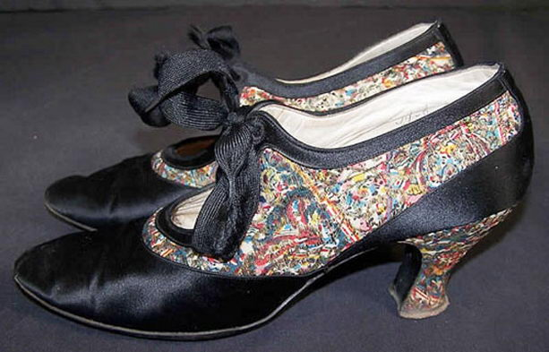
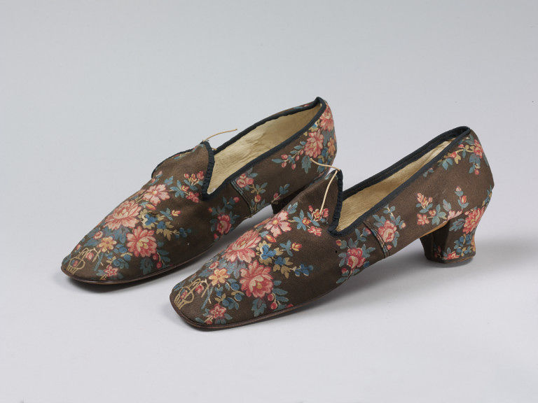
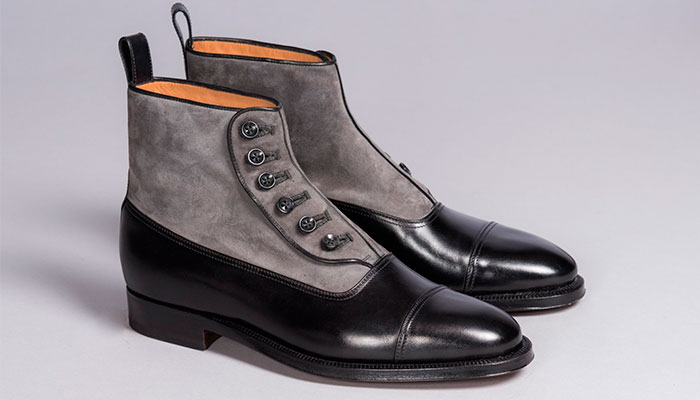
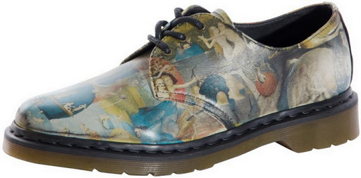

История развития
XVIII век
В XVIII веке, во время господства рококо, в моду вновь входят остроносые туфли и сапоги, ещё больше возрастёт значение украшений и декора — прежде всего пряжек, шнуровок и бантов на высоких подъёмах. Эпоха Просвещения тоже внесла свои коррективы в обувную моду.
XIX век
С середины XIX века место шелковых туфель занимают удобные и практичные кожаные ботиночки. Форма обуви становится более жесткой, появляется шнуровка и застежки. Самая модная модель того времени — полуботинки с меховой отделкой на каблучке-«рюмочке» средней высоты.
XX век
Новаторство двадцатого века главным образом состоит в том, что форма обуви начинает повторять очертания стопы, стелька становится асимметричной, но не полностью соответствующей ноге. В 20-е годы очередной бум переживают сандалии, а после Второй мировой дизайнеры начинают экспериментировать с материалами более дешёвыми, чем кожа: войлоком, парусиной, резиной. Обувь стала объектом внимания художников и конструкторов, но, как и прежде, оставалась признаком социального различия владельцев. Так, аристократическая обувь — узкая в ступне, остроносая, на фигурном каблуке. В зависимости от назначения носили туфли кожаные и атласные, замшевые и шелковые, ботинки на шнурках, крючках и пуговицах. Основной обувью мужчин были сапоги, а также штиблеты и полусапоги.
XXI век
Современная обувь 2010-х годов сильно различается по стилю и стоимости. Некоторые виды обуви, изготовленные известными дизайнерами, могут быть изготовлены из дорогих материалов и продаваться за сотни или даже тысячи долларов за пару. В 2010-х годах она все чаще изготавливается из резины, пластмассы и других материалов, полученных из нефтехимии.